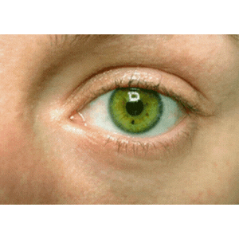

This is where ideas find their shape, colors find their voice, and creativity refuses to stay inside the lines. My portfolio is a curated journey through the intersections of inspiration and intention—where each piece is both a destination and a departure point. Whether you're here to explore, collaborate, or simply get lost in the art, I invite you to scroll with curiosity and linger with imagination. Every project tells a story. Let’s see which ones speak to you.
